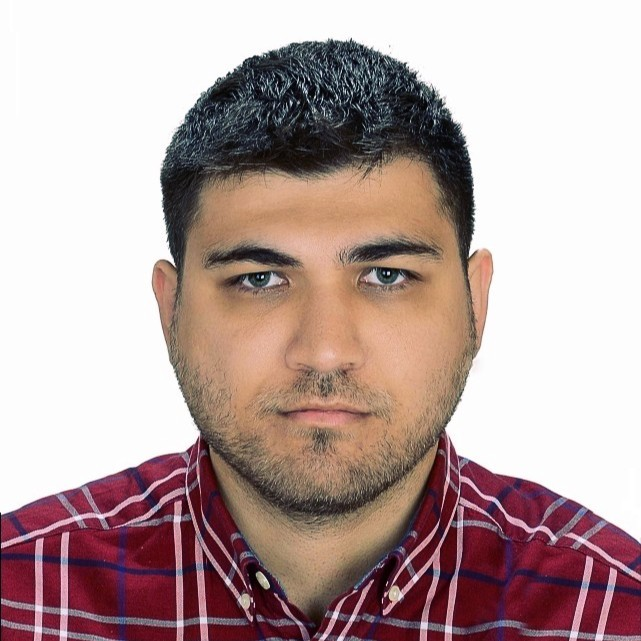

Yazılım Mühendisi
Lisans ve yüksek lisans eğitimlerimi endüstri mühendisliği alanında yaptım. Şu anda Maltepe Üniversitesi bilgisayar mühendisliği doktora programı 3'ncü sınıf öğrenciyim. Yazılım geliştirme ile ilgili 2016 yılında Smarptro Bilgisayar Akademisi kurumundan 6 ay yazılım geliştirme eğitimi aldım. Intertech- Denizbank, Agesa Hayat ve Emeklilik, Vodafone, Huawei, Newmind ve Neredekal’da Yazılım Test Mühendisi olarak çalıştım. Toplam 5 yıldan fazla test tecrübem bulunmaktadır.
Temel Yetkinlikler:
- ISTQB Foundation Level Sertifikası
- Agile proje deneyimi (Intertech-Denizbank, Vodafone, Huawei, Neredekal)
- Java ve C# selenium tool ile projelerde otomasyon testi tecrübesi (Intertech, Neredekal, Huawei)
- Performans testi tecrübesi. (Tool: Jmeter, Database: Influxdb, dashboard: Grafana)
- Manuel testler gerçekleştirmek
- API testlerinin Postman,Swagger ve SOAP UI ile gerçekleştirmek
- Test yönetim araçları Jira, Confluence ve TestRail kullanılması
Kıdemli Test Mühendisi- 12.2023- Devam Ediyor (7 ay)
• Agile metodoloji ile çalışılması (daily meeting, sprint retrospective, sprint planning)
• Otomasyon altyapısının Java ve Selenium ile kurulması
• Maven, TestNG, Cucumber toolların kullanılması
• Projede Page Object Model (POM) yapısının uygulanması
• Test caselerin yazılması
• Manuel testler yapmak
• Uzak makinaya Jenkins kurulması ve konfigürasyonların yapılması(Allure rapor elde edilmesi)
• Karate framework ile Java’da API otomasyonun yazılması
• Performans testlerinin koşulması (Jmeter, Infuluxdb, Grafana)
• API testlerinin koşulması (Postman, Swagger, Insomnia)
Test Otomasyon Mühendisi - 09.2023 - 12.2023 (4 ay)
• Otomasyon altyapısının Java ve Selenium ile kurulması
• Java ile selenium tool ile otomasyon kodlarının yazılması
• Maven, TestNG, Cucumber toolların kullanılması
• Projede Page Object Model (POM) yapısının uygulanması
• Test caselerin İngilizce olarak yazılması
• Uzak makinaya Jenkins kurulması ve konfigürasyonların sağlanması (Allure rapor elde edilmesi)
• Manuel testler yapmak
Kıdemli Test Mühendisi - 05.2022 - 05.2023 (1 yıl 1 ay)
Weblmt projesi
• Web ve masaüstü uygulamaları için testlerin hazırlanması,
• Test sonuçlarının incelenmesi ve bugların raporlanması,
• Güvenlik testlerinin uygulanması,
• Otomatize hale getirilmiş test caselerin Java Selenium framework ile otomasyon kodlarının geliştirilimesi (OOP, BDD, Cucumber),
• Jenkins’in aktifçe kullanılması,
• Web LMT aracının bakımı ve kurulması.
5GC projesi
• Json formatında API testleri,
• Test kullanıcı eğitim dökümantasyonun hazırlanması,
• Manuel testlerin yürütülmesi.
Yazılım Test Mühendisi - 11.2020 - 04.2022 (1 yıl 6 ay)
Vodafone’da Payment/Ödeme ekibinde çalıştım.
- Agile metodoloji ile çalışılması (daily meeting, sprint retrospective, sprint planning)
- CRM ekranları için manuel testler yapılması
- End to end testlerin yapılması
- Müşteriler için test datası hazırlanması,
- Test caselerin yazılması,
- Postman ve Swagger ile API testlerinin gerçekleştirilmesi
- Openshift ve Winscp ile logların incelenmesi (xml)
- Bugların bulunması ve Jira’da raporlanması
Yazılım Test Mühendisi - 03.2020 - 10.2020 (8 ay)
Optiim firmasına başladığımda İrlanda projesi Portfolio Management için Yazılım Kalite Güvence Mühendisi olarak çalıştım. Burada test senaryolarının yazılması ve Test Rail’e girilmesi, Java ve Selenium ile testlerin otomasyonlaştırılması, bugların bulunması ve takibi çalışmalarında yer aldım.
Daha sonra performans testi ve raporlama üzerine şirket içinde eğitim aldım. Eğitimin içeriği performans aracı Jmeter, database aracı InfluxDb ve dashboard aracı Grafana hakkındaydı. Şirketin kendi projeleri olan Aangine (İrlanda projesi) ve Meet Safe (Suudi Arabistan projesi) ile ilgili performans testlerini koştum.
Avivasa firmasında Performans Testi ve Raporlama Mühendisi olarak çalışmaya başladım. Burada Postman programıyla API testleri, backend ve frontend arayüzleri için performans testleri gerçekleştirdim. Testleri pred ve pre-prod ortamında koştum. Koşulan testlerden dataların kaydedilmesi için Influxdb ve Elasticsearch, raporlanmak içinse Grafana programını kullandım.
Yazılım Kalite Güvence Mühendisi - 03.2020 - 10.2020 (1 yıl 1 ay)
İlk olarak yazılım kalitesi, test ve otomasyon ilgili kapsamlı bir eğitim verildi. Eğitimin içeriğinde: C#, Agile, Git, ISTQB, NUnit, Selenium, BDD, SQL, Web Service Testleri, Appium, Jenkins, Sonarqube, App Dynamics ve Performance Testi vardı. Daha sonra ekibim Denizbank İnternet Bankacılığı Yatırım Ekibi’nde çalışmaya başladım. Burada sorumluluklarım:
- Agile metedoloji ile çalışmak,
- Test senaryolarının Jira’da yazılması,
- Manuel testlerin gerçekleştirilmesi (fonksiyonel test),
- UI ekranları için C# ile otomasyon kodlarının yazılması (Selenium, BDD, Specflow, OOP),
- Bugların bulunması ve takip etmek için Jira’nın kullanımı
- MS SQL ile data ihtiyacı olması durumunda sorguların yapılması
- Jenkins kullanımı
- Confluence kullanımı
Doktora - 08.2021 (%100 burslu)
• Discrete Methods
• Design and Analysis of Algorithms
• Theory of Computation
• Internet Protocols
• Special Topics in Computer Engineering II
Yüksek Lisans - 10.2017 - 03.2021 (%30 burslu)
Tez: ABC-XYZ metodunun AHP ile entegrasyon yöntemi ve bir tesiste uygulanması
Lisans - 9.2010 - 07.2015
Tez: Stok sınıflandırma yöntemleri ve bir tesiste uygulanması